tree_ebmfcov_greedy
Annie Xie
2025-02-20
Last updated: 2025-02-22
Checks: 7 0
Knit directory: covariance_decomps_dsc/
This reproducible R Markdown analysis was created with workflowr (version 1.7.1). The Checks tab describes the reproducibility checks that were applied when the results were created. The Past versions tab lists the development history.
Great! Since the R Markdown file has been committed to the Git repository, you know the exact version of the code that produced these results.
Great job! The global environment was empty. Objects defined in the global environment can affect the analysis in your R Markdown file in unknown ways. For reproduciblity it’s best to always run the code in an empty environment.
The command set.seed(20250203) was run prior to running
the code in the R Markdown file. Setting a seed ensures that any results
that rely on randomness, e.g. subsampling or permutations, are
reproducible.
Great job! Recording the operating system, R version, and package versions is critical for reproducibility.
Nice! There were no cached chunks for this analysis, so you can be confident that you successfully produced the results during this run.
Great job! Using relative paths to the files within your workflowr project makes it easier to run your code on other machines.
Great! You are using Git for version control. Tracking code development and connecting the code version to the results is critical for reproducibility.
The results in this page were generated with repository version 8da6544. See the Past versions tab to see a history of the changes made to the R Markdown and HTML files.
Note that you need to be careful to ensure that all relevant files for
the analysis have been committed to Git prior to generating the results
(you can use wflow_publish or
wflow_git_commit). workflowr only checks the R Markdown
file, but you know if there are other scripts or data files that it
depends on. Below is the status of the Git repository when the results
were generated:
Ignored files:
Ignored: .DS_Store
Ignored: .Rhistory
Ignored: data/.DS_Store
Untracked files:
Untracked: analysis/tree_symnmf.Rmd
Unstaged changes:
Modified: analysis/balanced_nonoverlapping_flash_normalf.Rmd
Note that any generated files, e.g. HTML, png, CSS, etc., are not included in this status report because it is ok for generated content to have uncommitted changes.
These are the previous versions of the repository in which changes were
made to the R Markdown (analysis/tree_ebmfcov_greedy.Rmd)
and HTML (docs/tree_ebmfcov_greedy.html) files. If you’ve
configured a remote Git repository (see ?wflow_git_remote),
click on the hyperlinks in the table below to view the files as they
were in that past version.
| File | Version | Author | Date | Message |
|---|---|---|---|---|
| Rmd | 8da6544 | Annie Xie | 2025-02-22 | Add exploration of flash greedy procedure in tree setting |
Introduction
In this analysis, I explore the greedy procedure on tree data. This is based off of my exploration of EBMFcov in the tree setting.
library(dplyr)
library(ggplot2)
library(pheatmap)
library(flashier)source('code/visualization_functions.R')compute_L2_fit <- function(est, dat, with_diag = FALSE){
if (with_diag == FALSE){
score <- sum((dat - est)^2) - sum((diag(dat) - diag(est))^2)
}
else{
score <- sum((dat - est)^2)
}
return(score)
}EBMFcov (without backfitting)
baltree_4pop_1 <- readRDS("data/baltree_4pop_1.rds")
baltree_4pop_1_ebmfcov_1 <- readRDS("data/baltree_4pop_1_ebmfcov_diag_1.rds")Exploration of Greedy Procedure on Tree Data
In this section, let \(\bar{L}_m\) denote the matrix composed of the first \(m\) columns of \(\bar{L}\), i.e. \(\bar{L}_m = \Big[ \bar{\ell}_1, \dots, \bar{\ell}_m \Big]\). \(\bar{F}_m\) is defined analogously.
Rank one fit
This is a heatmap of the matrix \(\frac{1}{p}XX' - \bar{L}_1 \bar{F}_1'\):
# I don't need to rescale since I using L and F from the flash fit (instead of just L)
XXt_rank1_fit <- (baltree_4pop_1_ebmfcov_1$fit_obj$fl$L_pm[,1] %*% t(baltree_4pop_1_ebmfcov_1$fit_obj$fl$F_pm[,1]))
XXt_resid1 <- baltree_4pop_1$data$YYt - XXt_rank1_fitThis is a heatmap of the rank-one fit, \(\bar{L}_1 \bar{F}_1'\):
plot_heatmap(XXt_rank1_fit, colors_range = c('blue', 'gray96', 'red'), brks = seq(-max(abs(XXt_rank1_fit)), max(abs(XXt_rank1_fit)), length.out = 50 ))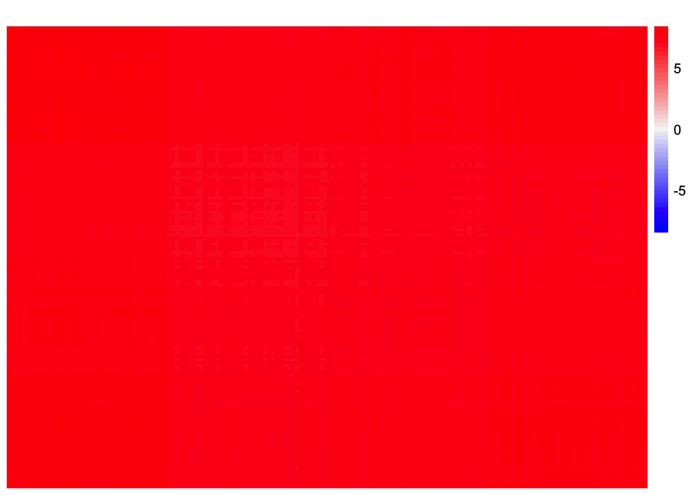
This is a heatmap of the full observed Gram matrix:
plot_heatmap(baltree_4pop_1$data$YYt, colors = c('blue','gray96', 'red'), brks = seq(-max(abs(baltree_4pop_1$data$YYt)), max(abs(baltree_4pop_1$data$YYt)), length.out = 50))
This is a heatmap of \(\frac{1}{p}XX' - \bar{L}_1 \bar{F}_1'\):
plot_heatmap(XXt_resid1, colors_range = c('blue', 'gray96', 'red'), brks = seq(-max(abs(XXt_resid1)), max(abs(XXt_resid1)), length.out = 50 ))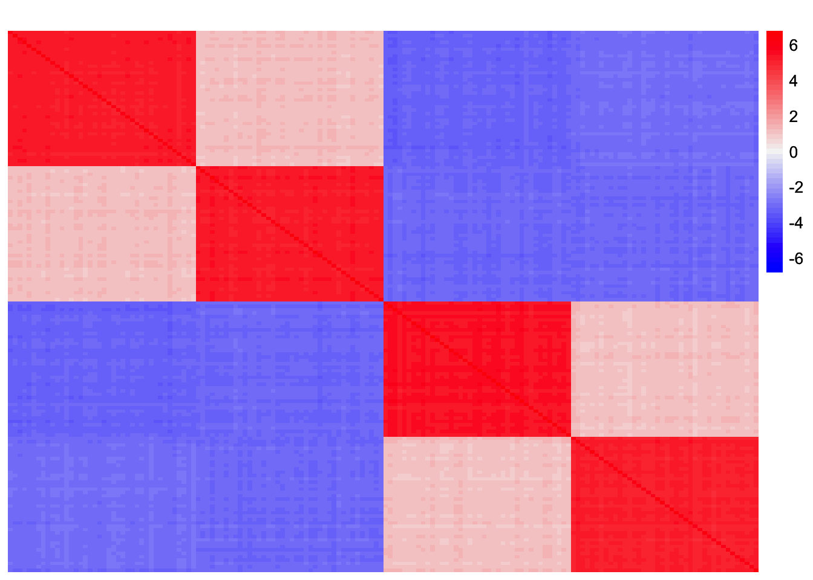
This is a scatterplot of the entries of the first column of \(\frac{1}{p}XX' - \bar{L}_1 \bar{F}_1'\):
plot(XXt_resid1[,1])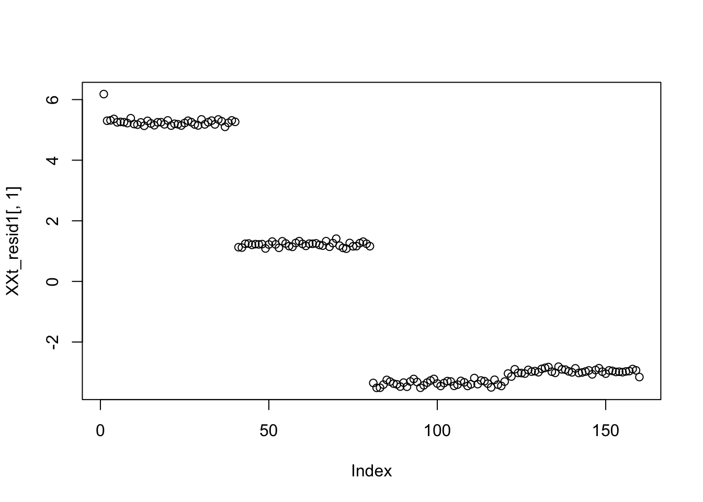
Rank two fit
Now we consider the rank-two fit.
This is a heatmap of the matrix \(\frac{1}{p}XX' - \bar{L}_2 \bar{F}_2'\):
XXt_rank2_fit <- (baltree_4pop_1_ebmfcov_1$fit_obj$fl$L_pm[,c(1:2)] %*% t(baltree_4pop_1_ebmfcov_1$fit_obj$fl$F_pm[,c(1:2)]))
XXt_resid2 <- baltree_4pop_1$data$YYt - XXt_rank2_fitThis is a heatmap of the rank-two fit, \(\bar{L}_2 \bar{F}_2'\):
plot_heatmap(XXt_rank2_fit, colors_range = c('blue', 'gray96', 'red'), brks = seq(-max(abs(XXt_rank2_fit)), max(abs(XXt_rank2_fit)), length.out = 50 ))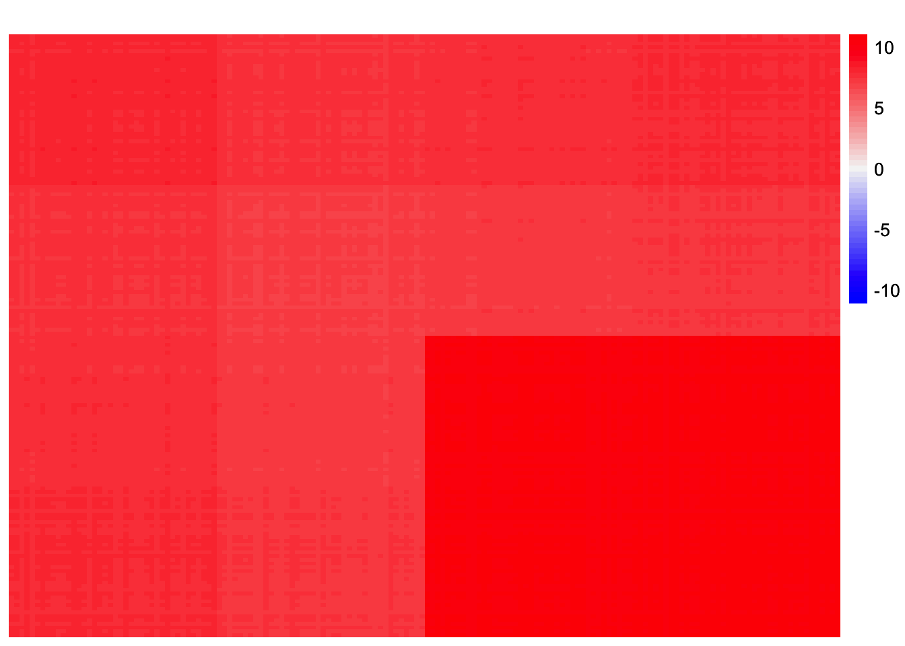
This is a heatmap of \(\frac{1}{p}XX' - \bar{L}_2 \bar{F}_2'\):
plot_heatmap(XXt_resid2, colors_range = c('blue', 'gray96', 'red'), brks = seq(-max(abs(XXt_resid2)), max(abs(XXt_resid2)), length.out = 50 ))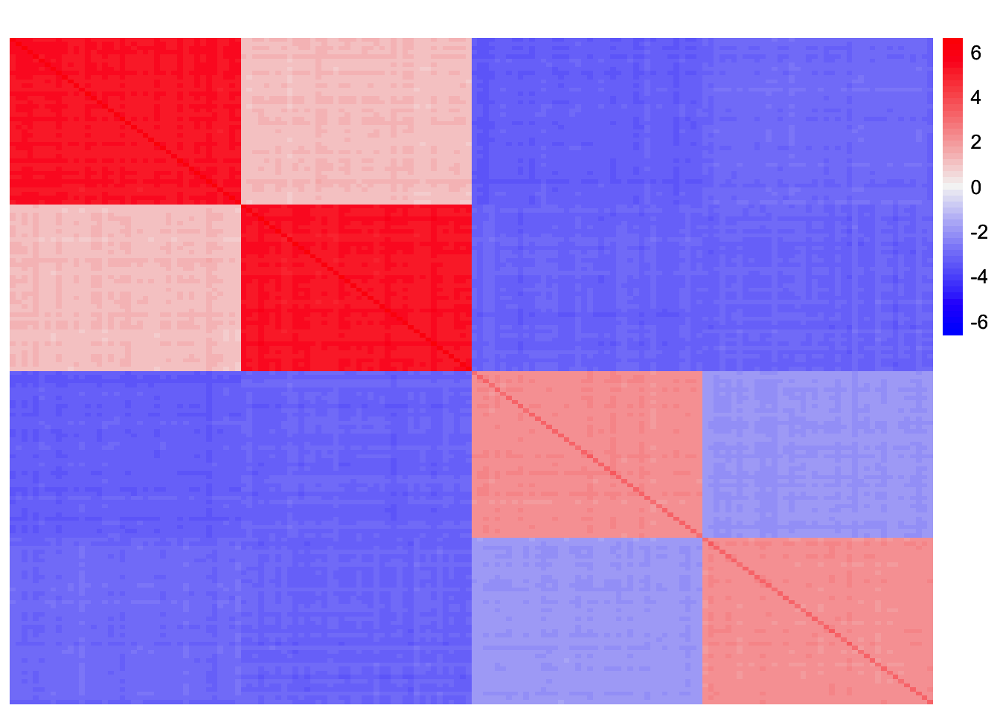
This is a scatterplot of the entries of the last column of \(\frac{1}{p}XX' - \bar{L}_2 \bar{F}_2'\):
plot(XXt_resid2[,160])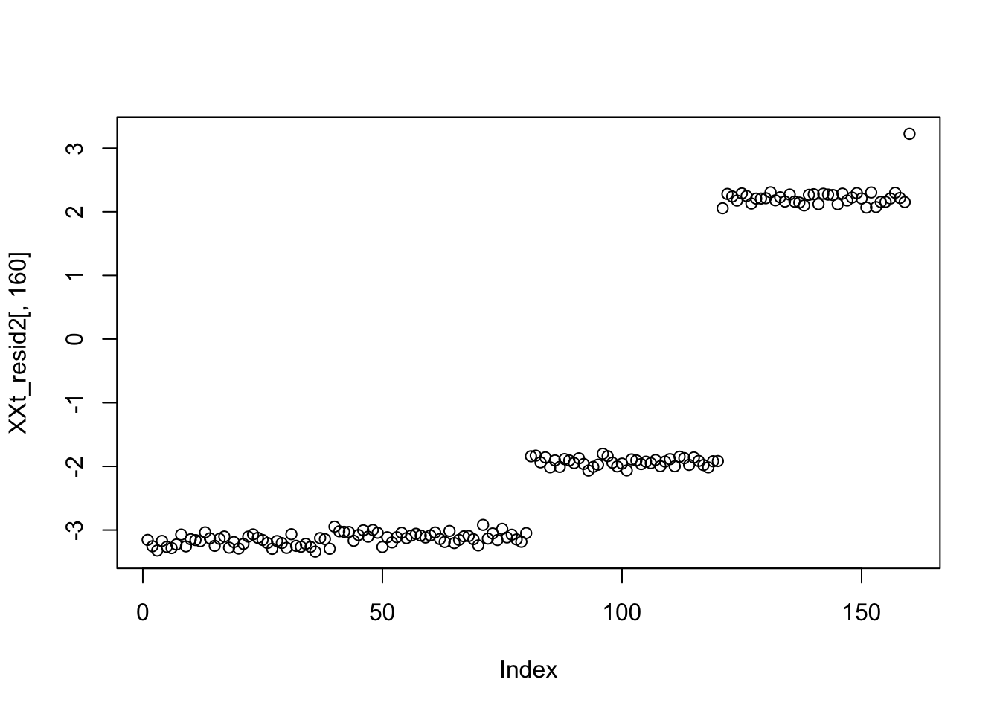
Rank three fit
XXt_rank3_fit <- fitted(baltree_4pop_1_ebmfcov_1$fit_obj$fl)
XXt_resid3 <- baltree_4pop_1$data$YYt - XXt_rank3_fitThis is a heatmap of the rank-three fit (the fit which EBMFcov finds), \(\bar{L}_3 \bar{F}_3'\):
plot_heatmap(XXt_rank3_fit, colors_range = c('blue', 'gray96', 'red'), brks = seq(-max(abs(XXt_rank3_fit)), max(abs(XXt_rank3_fit)), length.out = 50 ))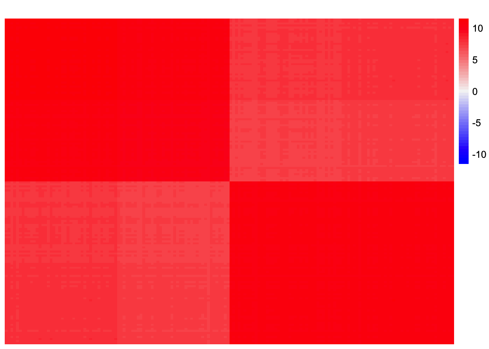
This is a heatmap of \(\frac{1}{p}XX' - \bar{L}_3 \bar{F}_3'\):
plot_heatmap(XXt_resid3, colors_range = c('blue', 'gray96', 'red'), brks = seq(-max(abs(XXt_resid3)), max(abs(XXt_resid3)), length.out = 50 ))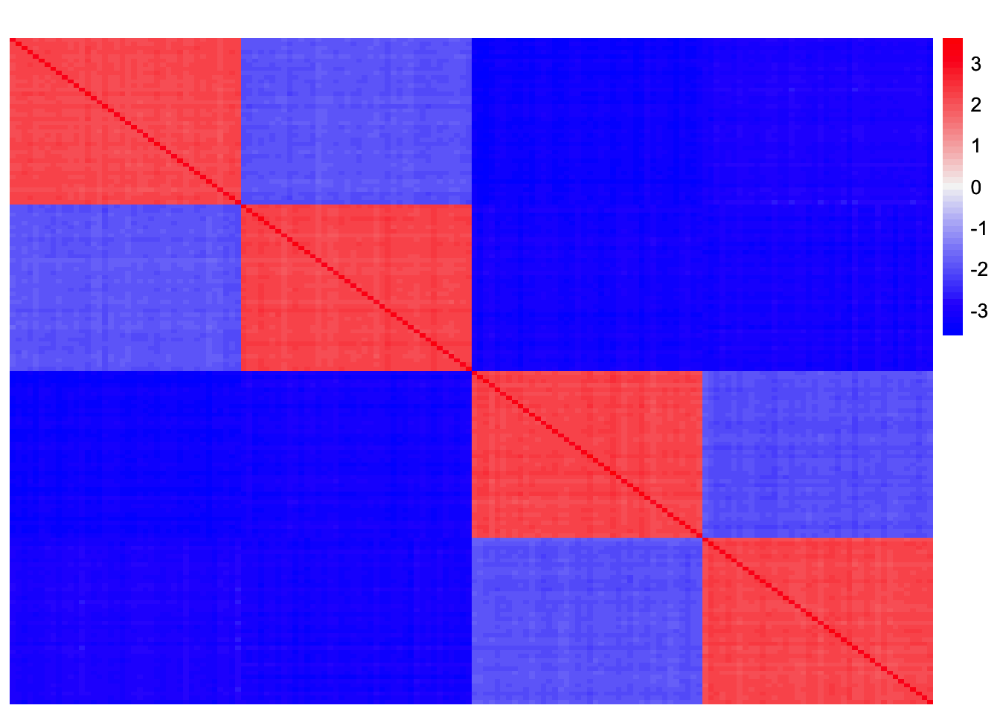
This is a scatterplot of the entries of the first column of \(\frac{1}{p}XX' - \bar{L}_3 \bar{F}_3'\):
plot(XXt_resid3[,1])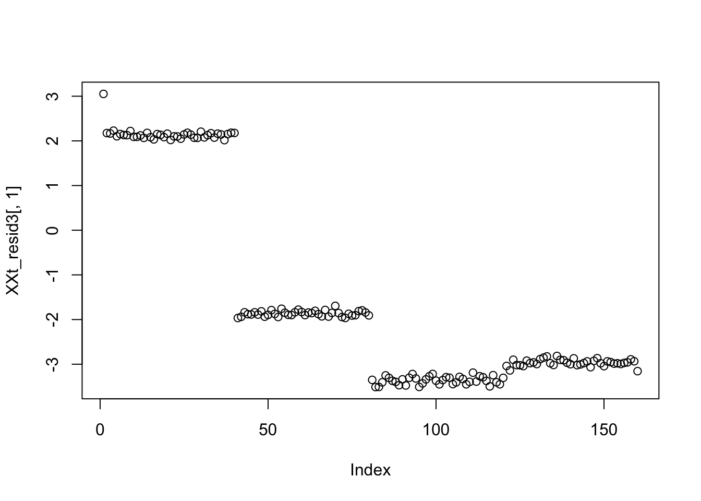
This is the estimate for the residual standard deviation (from the flash fit from EBMFcov):
baltree_4pop_1_ebmfcov_1$fit_obj$fl$residuals_sd[1] 2.689546Observations
The residualized matrix has blocks of negative entries which are of a comparable magnitude to the blocks of positive entries. Is this why EBMFcov stops adding more factors? Is it just attributing variation to normal noise? The estimated residual standard deviation from the flash object is 2.69 which is larger than the true value, which is 1.
Try applying flash to XXt residualized with true loadings
This is a heatmap of the “true” rank-three fit:
XXt_true_rank3_fit <- (1/ncol(baltree_4pop_1$data$Y))*tcrossprod(baltree_4pop_1$data$LL[,c(1:3)] %*% t(baltree_4pop_1$data$FF[,c(1:3)]))
XXt_true_resid3 <- baltree_4pop_1$data$YYt - XXt_true_rank3_fitplot_heatmap(XXt_true_rank3_fit, colors_range = c('blue', 'gray96', 'red'), brks = seq(-max(abs(XXt_true_rank3_fit)), max(abs(XXt_true_rank3_fit)), length.out = 50 ))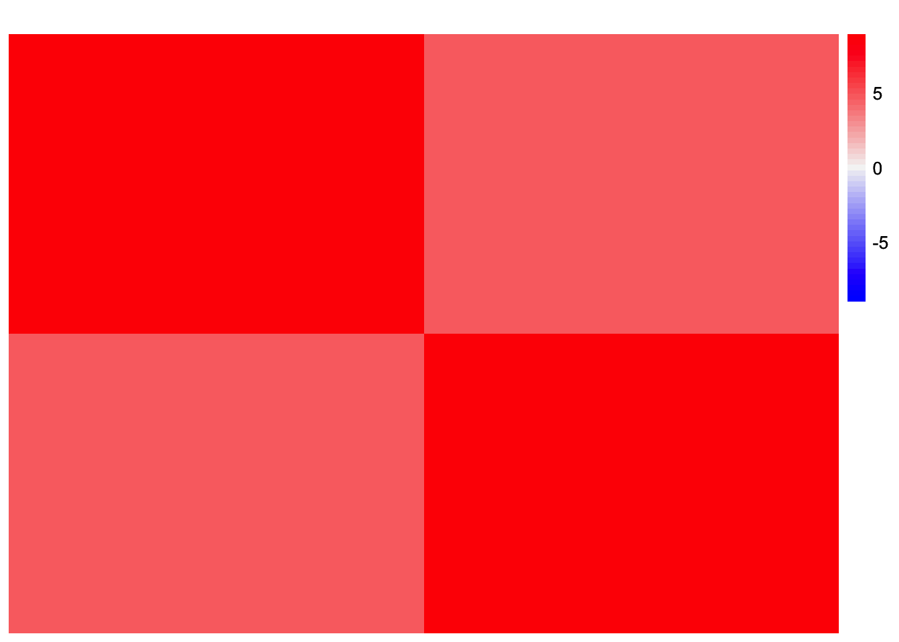
This is a heatmap of the observed Gram matrix:
plot_heatmap(baltree_4pop_1$data$YYt, colors = c('blue','gray96', 'red'), brks = seq(-max(abs(baltree_4pop_1$data$YYt)), max(abs(baltree_4pop_1$data$YYt)), length.out = 50))
This is a heatmap of the residualized Gram matrix, \(\frac{1}{p} XX' - L_3 F_3'\):
plot_heatmap(XXt_true_resid3, colors_range = c('blue', 'gray96', 'red'), brks = seq(-max(abs(XXt_true_resid3)), max(abs(XXt_true_resid3)), length.out = 50 ))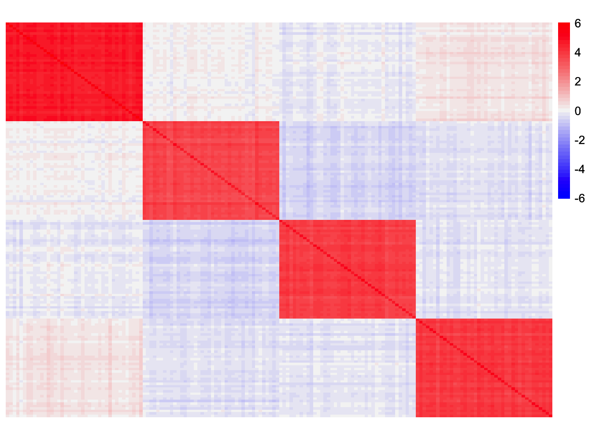
Now, we try applying flash to \(\frac{1}{p} XX' - L_3 F_3'\). I am curious to see whether it will add more factors or not. I expect flash to add factors to capture the group-specific effects.
flash_test <- flash_init(XXt_true_resid3) %>%
flash_set_verbose(2) %>%
flash_greedy(Kmax = 5, ebnm_fn = ebnm::ebnm_generalized_binary) %>%
flash_backfit()Adding factor 1 to flash object...
Optimizing factor...
Factor successfully added. Objective: -50105.854
Adding factor 2 to flash object...
Optimizing factor...
Factor successfully added. Objective: -45145.240
Adding factor 3 to flash object...
Optimizing factor...
Factor successfully added. Objective: -37963.098
Adding factor 4 to flash object...
Optimizing factor...
Factor successfully added. Objective: -35077.722
Adding factor 5 to flash object...Warning in scale.EF(EF): Fitting stopped after the initialization function
failed to find a non-zero factor. Optimizing factor...
Factor doesn't significantly increase objective and won't be added.
Wrapping up...
Done.
Backfitting 4 factors (tolerance: 3.81e-04)...
Difference between iterations is within 1.0e+03...
Difference between iterations is within 1.0e+02...
Difference between iterations is within 1.0e+01...
Difference between iterations is within 1.0e+00...
Difference between iterations is within 1.0e-01...
Difference between iterations is within 1.0e-02...
Difference between iterations is within 1.0e-03...
Backfit complete. Objective: -8062.597
Wrapping up...
Done.This is a heatmap of \(\hat{L}\):
plot_heatmap(flash_test$L_pm, colors_range = c('blue', 'gray96', 'red'), brks = seq(-max(abs(flash_test$L_pm)), max(abs(flash_test$L_pm)), length.out = 50 ))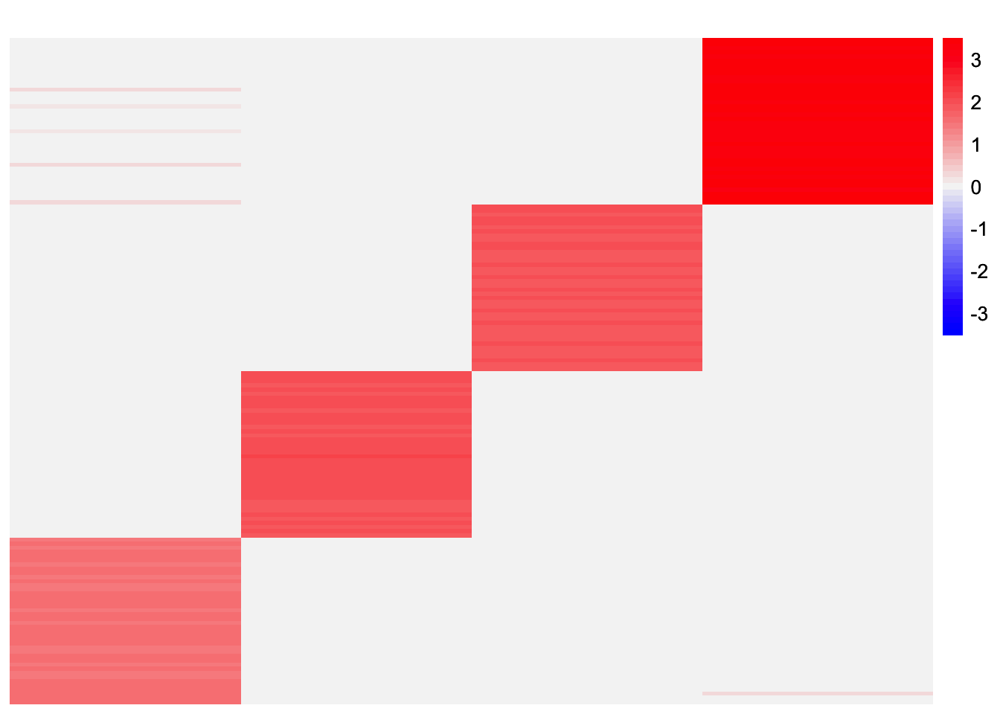
This is a heatmap of \(\hat{F}\):
plot_heatmap(flash_test$F_pm, colors_range = c('blue', 'gray96', 'red'), brks = seq(-max(abs(flash_test$F_pm)), max(abs(flash_test$F_pm)), length.out = 50 ))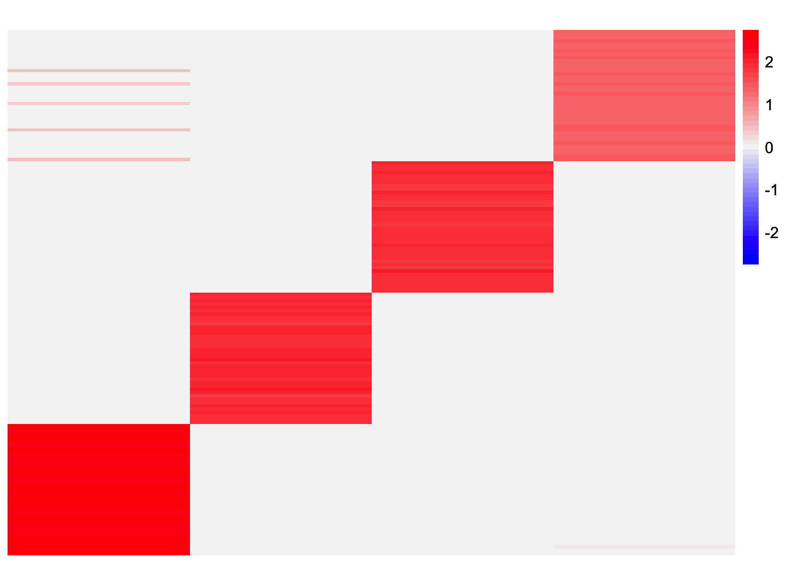
This is a heatmap of \(\hat{L} \hat{F}'\):
plot_heatmap(fitted(flash_test), colors_range = c('blue', 'gray96', 'red'), brks = seq(-max(abs(fitted(flash_test))), max(abs(fitted(flash_test))), length.out = 50 ))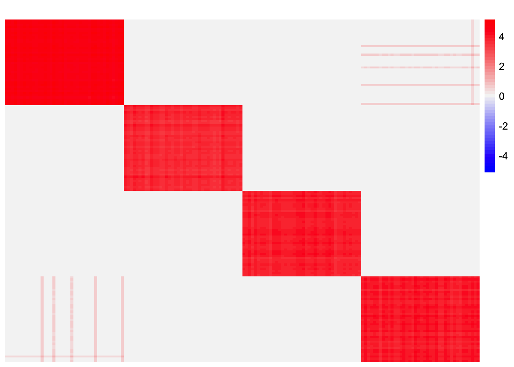
This is the estimate of the residual standard deviation:
flash_test$residuals_sd[1] 0.3157091Observations
Flash does add factors when fitting the “true” residualized matrix. This is the behavior I expected since the residualized matrix looks like the Gram matrix in the balanced non-overlapping setting. After backfitting, we get something that looks like the desired loadings matrix.
sessionInfo()R version 4.3.2 (2023-10-31)
Platform: aarch64-apple-darwin20 (64-bit)
Running under: macOS Sonoma 14.4.1
Matrix products: default
BLAS: /Library/Frameworks/R.framework/Versions/4.3-arm64/Resources/lib/libRblas.0.dylib
LAPACK: /Library/Frameworks/R.framework/Versions/4.3-arm64/Resources/lib/libRlapack.dylib; LAPACK version 3.11.0
locale:
[1] en_US.UTF-8/en_US.UTF-8/en_US.UTF-8/C/en_US.UTF-8/en_US.UTF-8
time zone: America/Chicago
tzcode source: internal
attached base packages:
[1] stats graphics grDevices utils datasets methods base
other attached packages:
[1] flashier_1.0.53 ebnm_1.1-34 pheatmap_1.0.12 ggplot2_3.5.1
[5] dplyr_1.1.4 workflowr_1.7.1
loaded via a namespace (and not attached):
[1] tidyselect_1.2.1 viridisLite_0.4.2 fastmap_1.2.0
[4] lazyeval_0.2.2 promises_1.3.0 digest_0.6.37
[7] lifecycle_1.0.4 processx_3.8.4 invgamma_1.1
[10] magrittr_2.0.3 compiler_4.3.2 rlang_1.1.4
[13] sass_0.4.9 progress_1.2.3 tools_4.3.2
[16] utf8_1.2.4 yaml_2.3.10 data.table_1.16.0
[19] knitr_1.48 prettyunits_1.2.0 htmlwidgets_1.6.4
[22] scatterplot3d_0.3-44 RColorBrewer_1.1-3 Rtsne_0.17
[25] withr_3.0.1 purrr_1.0.2 grid_4.3.2
[28] fansi_1.0.6 git2r_0.33.0 fastTopics_0.6-192
[31] colorspace_2.1-1 scales_1.3.0 gtools_3.9.5
[34] cli_3.6.3 rmarkdown_2.28 crayon_1.5.3
[37] generics_0.1.3 RcppParallel_5.1.9 rstudioapi_0.16.0
[40] httr_1.4.7 pbapply_1.7-2 cachem_1.1.0
[43] stringr_1.5.1 splines_4.3.2 parallel_4.3.2
[46] softImpute_1.4-1 vctrs_0.6.5 Matrix_1.6-5
[49] jsonlite_1.8.9 callr_3.7.6 hms_1.1.3
[52] mixsqp_0.3-54 ggrepel_0.9.6 irlba_2.3.5.1
[55] horseshoe_0.2.0 trust_0.1-8 plotly_4.10.4
[58] jquerylib_0.1.4 tidyr_1.3.1 glue_1.8.0
[61] ps_1.7.7 uwot_0.1.16 cowplot_1.1.3
[64] stringi_1.8.4 Polychrome_1.5.1 gtable_0.3.5
[67] later_1.3.2 quadprog_1.5-8 munsell_0.5.1
[70] tibble_3.2.1 pillar_1.9.0 htmltools_0.5.8.1
[73] truncnorm_1.0-9 R6_2.5.1 rprojroot_2.0.4
[76] evaluate_1.0.0 lattice_0.22-6 highr_0.11
[79] RhpcBLASctl_0.23-42 SQUAREM_2021.1 ashr_2.2-66
[82] httpuv_1.6.15 bslib_0.8.0 Rcpp_1.0.13
[85] deconvolveR_1.2-1 whisker_0.4.1 xfun_0.48
[88] fs_1.6.4 getPass_0.2-4 pkgconfig_2.0.3